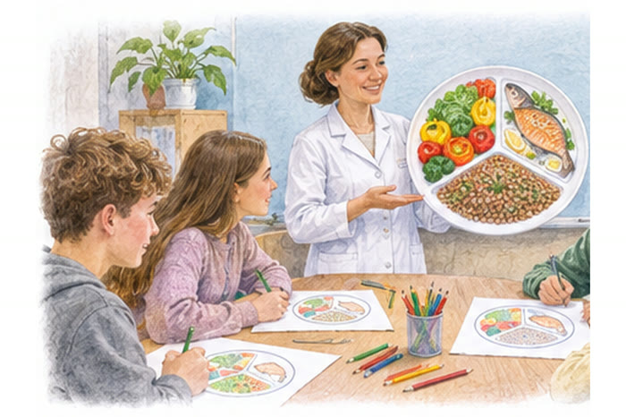

Listen to the text
Speed:

Last week a dietitian, Mrs Oksana, came to our school. We expected a boring lecture with the words "never" and "forbidden". We were wrong. She put an empty plate on the table. "I am not going to tell you what you mustn't eat," she said. "I will show you how to fill this plate." She drew three lines. "Half of the plate is vegetables and fruit. Different colours, like a rainbow: red tomatoes, orange carrots, green cucumbers, purple cabbage. Each colour means different vitamins. A quarter is protein: fish, chicken, eggs, beans or cheese. Protein builds your muscles. The last quarter is grains: buckwheat, rice, porridge or brown bread. They give you energy for a long time." "And sweets?" asked somebody. "Sweets are not poison. If you eat a healthy plate three times a day, a piece of cake on Sunday will not hurt you. The problem starts when chips and cola replace real meals." She gave us four simple rules. Don't skip breakfast. Drink water, not sweet drinks. Eat slowly, because your stomach needs twenty minutes to tell your brain that it is full. And don't eat in front of a screen. People who watch videos during dinner eat more and don't notice the taste. Then we made our own plates from paper and coloured pencils. Mine had borshch, which is almost a perfect dish: vegetables, beans and a piece of meat. Mrs Oksana gave it five stars. "Ukrainian grandmothers were dietitians long before me," she said. "They just didn't know the word."
Tap any sentence to hear it again.
Сподобалось? На сайті ще більше матеріалів для вчителів!
Reader, презентації, ігри, діагностичні та контрольні роботи до підручників 1-11 класів.
Перейти на сайт materials.allaenglish.com